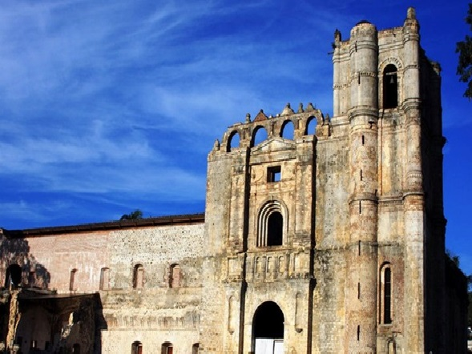
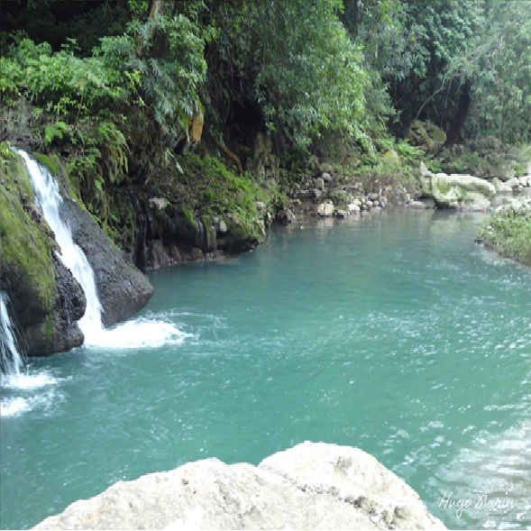
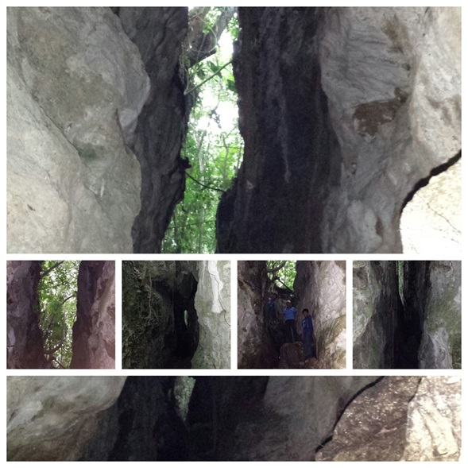

El Municipio de Tecpatán es uno de los 118 municipios del estado mexicano de Chiapas, se encuentra en el noroeste del estado y gran parte de su territorio se encuentra ocupado por el embalse de la Presa "Netzahualcóyotl", mejor conocida como Presa Malpaso. Su cabecera es el pueblo de Tecpatán.
El municipio de Tecpatán se encuentra en la zona noroeste del estado de Chiapas, sus límites son al norte con el Municipio deOstuacán, al noreste con el de Francisco León, al este con los de Ocotepec y Copainalá, al sur con los de Cintalapa y Ocozocoautla de Espinosa y al noroeste con el estado de Veracruz de Ignacio de la Llave, particularmente con el municipio de Las Choapas. Su extensión territorial es de 37,543 km², uno de los más extensos del estado de Chiapas, y representa el 6.09% del territorio del estado.

Tecpatán se encuentra en la mayor región hidrológica de México, la Región Grijalva-Usumacinta, y a las cuencas Río Grijalva - Villahermosa al norte y a la Río Grijalva - Tuxtla Gutiérrez, el límite de ambas cuencas esta señalado por la Presa Malpaso y dividen el municipio de forma transversal de este a oeste.1 El río Grijalva que también es conocido localmente como Río Grande de Chiapas recorre el territorio del municipio de sur a norte y es la mayor corriente del territorio, todas las restantes corrientes menores desaguan en el, y en la zona norte del municipio es represado en la segunda mayor presa de México, la Presa Malpaso que inunda un importante sector del territorio municipal.
